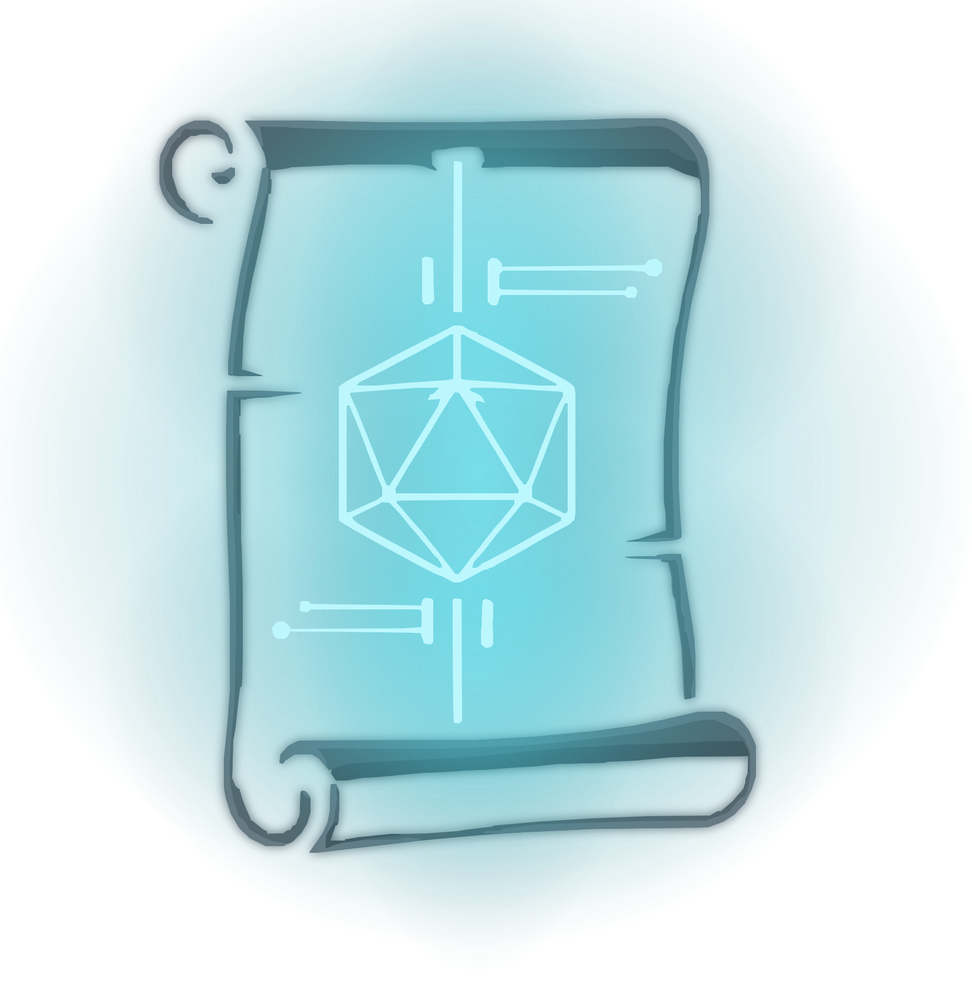

| Book | Overview | Profile |
|---|---|---|
|
Tiny Cyberpunk
May 2026
Minimalist 2d6 cyberpunk
Core
Gallant Knight
DriveThruRPG
Owned
|
Core 140pp
TinyD6 (2d6)
Cyberpunk
Minimalist
Solo rules
Tiny Cyberpunk — Corporate Edition (Apr 2025, 140pp hardcover)
Alan Bahr / Gallant Knight Games. TinyD6 engine: roll 2d6, any 5–6 = success; advantage = 3d6, disadvantage = 1d6. Archetype + three traits chargen. Hacking, vehicles, drones, hideouts, solo rules. Setting: Neodinium (corps, gangs, district-based one-page adventures). “Corporate Edition” because a freelancer broke contract with AI-generated setting text; GKG re-framed the affected section as in-universe corp propaganda (rules unaffected). Built for one-shots and short campaigns (10–12 sessions max).
|
|
|
Bite the Hand
Apr 2026
Panic Engine cyberpunk horror
Core
itch.io
Lulu POD
Owned
|
46pp digest zine
Colour interior
Mothership Panic Engine
Stress / Panic
Heat + Debt
One-shot included
Bite the Hand (2026, Alexander Vigna / Spellbook Gaming)
Mothership’s Panic Engine re-aimed at cyberpunk: d100 stat checks and saves, Stress accumulating into a custom Panic table, so a firefight in a corporate lobby carries the same dread as a derelict-ship corridor. Four classes (rogue, soldier, technician, turncoat), a d100 signature-styles table, 44 cybernetics, ~50 items and vehicles, rules for stealth, social manipulation, hacking, hazards, downtime and medical care. The two genre-specific additions are Heat (a wanted level) and debt, wired to feed each other — chrome costs money, money costs jobs, jobs raise Heat. Explicitly not a power fantasy: fights are meant to be avoided or survived, not won. Warden advice, 13 NPCs, cyberpunk worldbuilding guidance, a built-in one-shot, cheat-sheet back cover. Art is manipulated stock photography, no generative AI. Failed to crowdfund, then self-published: digital V1.0 + Tabletop Bookshelf print Apr 2026, Lulu POD for non-US from Jul 2026 (ISBN 9798234035684). Mothership conversion guide free on itch, so Mothership modules and the Panic-Engine third-party scene port over. Author plans adventure modules with added gear.
|
|
|
:Otherscape
Aug 2024
Mythic cyberpunk
Core
Tokyo
Action Database
Son of Oak
PDFs (18)
Owned
Cairo + Neuro
|
368pp core + 320pp Tokyo + 106pp Action DB
2d6 + tags
Mist Engine
Mythic cyberpunk
Mythic cyberpunk RPG from Son of Oak (City of Mist). Megacity 20XX — ancient Mythoi (Kitsune, Oni, Baba Yaga, King Arthur) cling to existence in a neon-drenched corporate dystopia of omnipresent "Noise." Tag-based system: no stats, no classes — characters built from narrative descriptors (+1/−1 each), stacked per-roll. Three theme types: Self (identity), Logos (myth), Noise (cyberware). Single unified roll replaces PbtA moves. GM dials tactical depth per-scene. Condition statuses (1–6) replace HP. Adjustable crunch — narrative or detailed resolution per-action. Box set includes core book, Tokyo setting, MC screen, dry-wipe A3 character folios, cards, dice.
ReviewsCairo:Otherscape + Neuro:Otherscape (preordered, KS Apr–May 2025)
Combined preorder for two major :Otherscape expansions by Amít Moshe / Son of Oak. Funded April–May 2025 on Kickstarter ($303k raised against a $50k goal, 2,538 backers); now in BackerKit late-pledge / preorder phase, physical fulfillment expected 2025–2026.
Cairo:Otherscape — Setting book for an alternate-future Cairo and Alexandria. New themebooks, items, challenges, and factions inspired by Arabic mythology (Evil Eye, Ifrits, Jinn), themes of international interference (foreign archaeologists looting Egyptian relics), and Cairo's diverse population. Drops into the core :Otherscape rules without alteration. Neuro:Otherscape — First major non-campaign expansion. Cyberspace supplement bringing rules and material for running scenes inside the Net / Otherscape itself. Physical and digital both in the campaign. kickstarter backerkit press kit |
|
|
Cities Without Number
Aug 2023
OSR cyberpunk sandbox
Core
Sine Nomine
Owned
|
Offset Print Edition HC
Deluxe PDF
Without Number engine (d20 + 2d6)
Sandbox toolkit
SWN / WWN compatible
Cities Without Number (2023, Kevin Crawford / Sine Nomine Publishing)
Kevin Crawford's OSR-inspired cyberpunk RPG built for sandbox play — half rules, half GM toolkit for building your own dystopia. Same engine as Stars Without Number and Worlds Without Number (fully compatible): d20 attacks, 2d6 skill checks. Cyberware and high-tech gear, drones and vehicles, and playability-first hacking rules that give netrunner PCs real things to do without a separate minigame. Sine Nomine worldbuilding tools: gang, corp and city-district generators, fifty Mission Tags, step-by-step procedures for facility infiltration, heat, and fencing loot. Default setting: the City. The deluxe content adds megacorp cyberware lines with quirks, gengineered human variants, optional Cyber Alienation strain, cheap street cyber, and optional magic (spellcasting, spirit summoning, magic items) for a Shadowrun-ish blend.
Offset Print Edition: the limited Kickstarter-surplus print run — sewn binding, printed endsheets, better paper and ink than the POD version. Includes the deluxe PDF. Out of print once sold out.
|
|
|
NewEdo
Jun 2023
Neon-samurai belief-defines-reality
Core
Salty Games
DriveThruRPG
Owned
|
Core 308pp HC
d10 exploding + d4/d6/d8/d12
Fate Cards
Priority-Buy character creation
Belief-defines-reality
Neon-samurai
Russ Rowlands's medium-crunch cyberpunk-mythpunk RPG. NewEdo City, mid-21st century, 50 million people, kami and yōkai coexisting with megacorps and cyberware — "if enough people believe it, it's real." Trait + Skill dice pools (exploding d10 Traits + mixed d4/d6/d8/d12 Skills), Fate Cards as the signature mechanic (layer random-events triggers into play). Priority-Buy character creation via Lineage (physiology) + Path (political motivation). Register-shift from angst-doom cyberpunk defaults — character-heroic mode with mythic texture, not grimdark. KS operations widely praised.
|
|
|
CBR+PNK: Augmented
Jun 2023
FitD cyberpunk one-shots
Core
PDF → A4 print
itch.io
Mythworks
Owned
|
12 pamphlets (A4 booklet)
Forged in the Dark
Cyberpunk one-shots
Last Run
RPGGeek 7.5/10
itch.io 5.0/5 (111)
Emanoel Melo's minimalist cyberpunk RPG built on stripped-down Forged in the Dark. Players are RUNNERS on their LAST RUN — mercs, criminals, activists in the shadows of a gritty ultraviolent world. Dice pools, clocks, flashbacks, stress-triggered augmentations. Built for one-shots: character creation in 15 minutes, full session in 3–4 hours. The Angle roll epilogue provides narrative closure.
|
|
|
CY_BORG
Nov 2022
Cyberpunk doom-grimoire
Core
Free League
Ex Libris CY_BORG
PDFs (33+)
Owned
|
Core 160pp
d20 OSR
Cyberpunk
NetSys hacking
Apps & cyberware
CY_BORG (Nov 2022, 160pp digest hardcover)
Cyberpunk Mörk Borg hack by Christian Sahlén, Johan Nohr & Pelle Nilsson (Stockholm Kartell / Free League). Same d20 roll-over chassis, five attributes (Agility, Knowledge, Presence, Strength, Toughness), player-facing combat — enemies never roll. Setting is Cy, a collapsing mega-city with fleshed-out districts (Central, The Hills, The Ports, The Industries), named corps, riot mechanics, and a full NetSys hacking subsystem with nodes/ICE/cyberdecks. Six Punk classes, cyberware as first-class equipment, procedurally-generated apps as tools.
Johan Nohr's layout goes neon-on-void this time — RPGGeek 7.3/10, Wargamer 8/10, "the most visually visceral RPG ever printed" is the running critic line. Same radically open third-party licence as Mörk Borg; huge community ecosystem via Ex Libris CY_BORG and Itch.io zines (HACKiNG_RUN, Down Bad, gutter_PVNKS, Beyond Cy, etc.).
|
|
|
Blade Runner RPG
Nov 2022
Neo-noir replicant investigation
Starter Set
Free League
Owned
|
Starter Set (box)
Year Zero Engine variant
Investigation / Case Files
Los Angeles 2037
Blade Runner: The Roleplaying Game — Starter Set (2022, Free League)
Official licensed RPG, set in Los Angeles 2037 between the two films. Players are Blade Runners of the LAPD Rep-Detect unit — humans and replicants — working murky Case Files. Free League's Year Zero Engine variant: attributes and skills are rated A–D and roll as a die size (d12 down to d6), two dice per roll, 6+ succeeds; pushing risks damage and stress. Investigation-first structure with a shift-based clock, and a promotion-versus-humanity pull on each character. KS raised about $1.68M.
|
|
|
Neon City Overdrive
Dec 2020
Rules-light cyberpunk d6
Core
Peril Planet
DriveThruRPG
Owned
|
Core HC + 3 expansions SC
d6 pool, take highest
Freeform Universal engine
Cyberpunk
Sandbox setting
Neon City Overdrive (Dec 2020, core hardcover + The Grid / Psions / Skinjobs softcover)
Nathan Russell / Peril Planet. Cyberpunk implementation of the Freeform Universal (FU) engine — Russell's own rules-light chassis, evolved with cues from Blades in the Dark and Fate. Roll a pool of d6, take highest: 6 = success, 4–5 = success at cost, 3 or less = failure; multiple 6s grant Boosts; 1s can trigger complications. Player-facing rolls only — GM narrates outcomes, never rolls dice. Character-creation-in-minutes: pick trademarks (freeform descriptors like Arcology Brat, Codeslinger) + a Drive (the way out of this life) + gear-up per job. Physical / mental / social harm as hits, conditions, traumas.
Broad-sandbox Neon City setting — corp-dystopia baseline, random tables to make it your own, minimal fixed lore. Deliberate "chassis for cyberpunk stories" positioning rather than published-world commitment. EN World: "the best cyberpunk game you're not playing right now." Indie sleeper hit — small community, big reviewer love.
ReviewsThe Grid (expansion — cyberspace & hacking)
Full cyberspace supplement — takes the game off the street into the sprawling data network. Explains the Grid's infrastructure (holographic overlay, data hubs, private nets, interface gear) and named locations: Underwire, the Beam, the Ribbon. Adds new hazards (data storms, oubliettes), grid cops, gate guardians, black ICE, grid-specific conditions/traumas. 25 new trademarks + advice on playing an AI. Fills the "wireless / netrunning" gap the core book intentionally leaves open.
DriveThruRPG Psions (expansion — psychic powers)
Adds psionics/magic to the cyberpunk baseline — the "make it Shadowrun-shaped" expansion. Seven psionic power types (metahealing, pyrokinesis, telepathy, plus more) with triggers, flaws, example effects. Rules for psionics, fear & loathing, psionic amplification, cyber disruption, nexus zones. 50+ new trademarks including psionic and non-psionic backgrounds (mimic, energy vampire, radiohead). Two mini-settings, notably Psiberpunks — dark-conspiracy world where being psionic is a curse.
DriveThruRPG Skinjobs (expansion — transhumanism & body-hopping, v1.1)
Artificial bodies and digital ghosts as a first-class part of the game. Rules for re-skinning (ghost-chip body transfer) with transfer sickness as a real mechanical risk. New trademarks for bioroids (organic clones), androids (artificial bodies), theroids (animal bodies), gene hacks. New roles: ghost hunter, robot repairman, skim trader, transfer technician. New flaws + traumas keyed to identity-fragmentation. Adventure seeds and a ready job.
DriveThruRPG Solo play
Not solo-native (no built-in oracle or journaling structure) but genuinely solo-adaptable — the design decisions carry more solo weight than the ★★ suggests. Player-facing rolls mean the GM role is pure narrator/interpreter, which maps cleanly to solo with any oracle bolt-on. Broad-sandbox + random tables substitute for GM prep. And Nathan Russell's underlying Freeform Universal 2e engine has explicit solo rules that inherit down to NCO. Community has proven the pattern works — Peril Planet has curated actual plays specifically:
Peril Planet actual-plays hub A. R. Kavli solo YouTube /GeofAO2 solo playthrough (r/Solo_Roleplaying) Practical solo setup: pair NCO with Mythic GM Emulator or Ironsworn's oracles for scene-level randomness; use the sandbox tables for setting; let Drive supply the character arc. Same solo-adaptability pattern as CY_BORG (which she runs with Down Bad's solo micro-ruleset). Verdict: works, just requires one bolt-on tool rather than being solo-turnkey. |
|
|
Cyberpunk RED
Nov 2020
The one called Cyberpunk
Core
Truant Spiele
R. Talsorian
Owned
|
Core HC (DE)
Interlock · d10
Night City 2045
Lifepath chargen
Cyberpunk RED (2020, R. Talsorian — German edition Truant Spiele)
Mike Pondsmith’s fourth edition of the game that named the genre in RPGs. Interlock system: d10 + stat + skill vs DV, exploding 10s, Roles (Solo, Netrunner, Rockerboy, Media, Fixer, Nomad, Tech, Medtech, Exec, Lawman) each with a signature Role Ability. Lifepath chargen generates backstory, contacts, enemies. Set in Night City 2045 — the “Time of the Red” between 2020 and 2077. Netrunning rebuilt as a physical-space architecture crawl rather than a separate minigame. German line from Truant, all hardcover.
|
|
|
Lancer
Nov 2019
Tactical mech sci-fi
Core
Massif Press
Owned
|
432pp
Mech tactical
Narrative + crunch
Free PDF
Mud-and-lasers mech combat RPG by Tom Bloom & Miguel Lopez. Narrative pilot play (fiction-first, no grid) paired with deep tactical mech combat (grid-based, modular builds). COMP/CON companion app for mech building. Core PDF is free. Second printing via Dark Horse Comics.
|
|
|
SIGMATA: This Signal Kills Fascists
Aug 2018
Cyberrevolutionary insurgency
Core
Repeat the Signal
DriveThruRPG
Land of NOP
Owned
|
Core 326pp premium HC
Repeat the Signal premium HC
5-dice pool · d10/d6 · 6+
1986 fascist USA
Radio-powered cyborgs
Insurgency sandbox
SIGMATA: This Signal Kills Fascists (2018, Chad Walker / Land of NOP)
Chad Walker (Cryptomancer). Alt-1986: McCarthy took the White House, the Regime won. PCs are Receivers — cyborg revolutionaries with superpowers only while an FM tower broadcasts the Signal; Signal down, you’re a marked mortal. Always five dice: d10s equal to your Processing Unit (Aggression / Guile / Judgment / Valor), d6 buffers for the rest, 6+ succeeds; winner narrates. Structured Combat / Evasion / Intrigue scenes plus a War Room sandbox where four Resistance factions, public sentiment and foreign opinion shift with every mission and set how long the Signal stays up. “Show fascism, don’t be fascist.” ENnies 2019 Judges’ Spotlight.
|
|
|
Shadowrun 3.01D, 4.01D
Aug 2005
Cyberpunk-fantasy dice pool
3.01D release: 1998
4.01D release: 2005 Owned
|
d6 pool
Catalyst
Shadowrun 3.01D / 4.01D (1998 / 2005)
Cyberpunk-meets-fantasy in the Sixth World — megacorps, deckers, street samurai, and awakened magic after the return of the dragons in 2011. d6 dice pool system: roll attribute + skill in d6s, count hits (5–6). Archetypes instead of classes — characters are built from priority tables and skill points, producing wildly different specialists (rigger, mage, face, decker, adept). The Matrix hacking subsystem is its own game-within-a-game. 3.01D was the German errata'd third edition (the one we played most); 4.01D modernised the Matrix rules and unified the dice mechanic. Setting worldbuilding is the gold standard — in-universe fiction, shadowtalk commentary, decades of metaplot. Played this extensively.
|
| Book | Overview | Profile |
|---|---|---|
|
Legend in the Mist
Jun 2026
Rustic dark fantasy
Core + Action Grimoire
PDFs
Son of Oak
PDFs owned
Ravenholme Bundle
|
Core 496pp
Action Grimoire 103pp
GM Screen + splatbooks
The Twilight Deck
Mist Engine
Rustic fantasy
2d6 + tags
~$855k KS
Amít Moshe / Son of Oak's “rustic fantasy” RPG — the engine she fell for in :Otherscape refactored further from its PbtA roots, fantasy-tuned for hobbit-leaving-the-Shire and Ashitaka-leaving-Emishi stories in a post-apocalyptic countryside where great kingdoms fell long ago and communities reduced to scattered villages in hills and vales. Characters built from four Themes (Origin / personality / job / background) + Fellowship Theme for the party; each Theme = Power Tags + Weakness Tags. 2d6 + Tag math, 10+ / 7–9 / 6– resolution, the same 1–6 Status ladder :Otherscape uses. Three Might levels (Origin / Adventurer / Greatness) scale the same character from rank amateur to mythic hero, no level grind. Kickstarted 2025 for ~$855k. Comic-book Create-Your-Own-Adventure included to teach the system.
|
|
|
Mini D20
Mar 2026
One-die classic fantasy
Core
Uhrwerk
Kritischer Fehlschlag
Owned
|
Core 40pp A5 (DE)
Single d20
OSR-module compatible
4 classes
Mini D20 (2026, Sebastian “Seba” Hahn / Kritischer Fehlschlag — print by Uhrwerk Verlag)
German rules-lite classic fantasy RPG that runs on a single d20. Four classes, very lean rules, one GM plus up to six players. Fully compatible with OSR modules and adventures, but PCs start stronger than OSR characters (roughly level-4 heroes) and level-ups are bigger power jumps. Draws on 3e and 5e as well as the old school. Includes an 8-page starter adventure. Pitched at absolute beginners and kids. Free PDF from Kritischer Fehlschlag (AELF Open License); print is a 40-page A5 staple-bound b/w booklet. Free adventure PDFs on the author's blog: Sternenfall, Suche im Goblinwald, Abstieg.
|
|
|
Draw Steel
Jul 2025
Tactical fantasy combat
Core
MCDM
PDFs (2)
Owned
|
Heroes 400pp+
Monsters 300pp+
Tactical combat
Matt Colville
Draw Steel: Heroes
Character creation, classes, combat system, exploration, negotiation. MCDM's own tactical fantasy RPG — not D&D, not d20.
Draw Steel: Monsters
Hundreds of monster stat blocks across dozens of types. Designed around MCDM's action-oriented encounter philosophy.
|
|
|
Daggerheart
May 2025
Hope/Fear narrative fantasy
Core
Homepage
Owned
|
366pp
2d12 duality dice
Hope & Fear
Narrative fantasy
Narrative fantasy RPG from Critical Role's Darrington Press. Duality dice (Hope/Fear), card-based character building, GM-less turn structure. Built for cinematic, story-driven play.
Hope & Fear expansion (owned)
Darrington Press · Aug 2026 · 200pp. 4 new classes (Witch / Warlock / Brawler / Assassin) + 8 subclasses, transformation mechanic (vampire / werewolf / demigod / more), 130+ adversaries, 28 environments, 4 campaign frames, new community + ancestry cards.
Darrington Press |
|
|
Vagabond
Feb 2025
Pulp fantasy adventure
Core
DMsGuild
PDFs (21)
Owned
|
212pp
d20 roll-over
Dungeon crawl
Solo / Co-Op / Guided
Pulp fantasy dungeon crawler by Land of the Blind. Old-school practicality meets modern character expression — d20 roll-over with Favor/Hinder (advantage analog), Mana-based magic, zone combat, Morale system. 7 ancestries, 18 classes, 50+ perks, 60 spells, 200+ monster statblocks with Action Gambits. Supports solo, co-op, and guided play.
|
|
|
D&D 5.5e
Sep 2024
Heroic high fantasy
PDFs (29)
Owned
|
d20
WotC
D&D 5.5e / 2024 Revised (2024, three core books)
The 2024 revision of fifth edition. Player's Handbook, Dungeon Master's Guide, Monster Manual — backwards compatible with 5e but rewritten from the ground up. Subclass at level 3, weapon mastery system, rebuilt martial classes, streamlined spellcasting, revised backgrounds as mechanical origin. d20 + modifier vs. DC, advantage/disadvantage, four tiers of play (1–4 local heroes through 17–20 cosmic threats). Large third-party ecosystem. Full collection tracked in Book collection.
|
|
|
Pathfinder 2E Remaster
Nov 2023
Tactical d20 fantasy
Core
Paizo
PDFs (49)
Owned
|
d20 / 3-action
Paizo
Player Core 464pp
Player Core 2 320pp
GM Core 336pp
Monster Core 376pp
NPC Core 240pp
ORC license
Not a new edition — a rewrite of the four PF2E core books under the ORC license after the OGL crisis (Jan 2023). Removes all WotC-traceable content. Includes 2023 errata cycle. Legacy books remain compatible.
|
|
|
Dragonbane
Aug 2023
Nordic adventure fantasy
Core Set
Free League
PDFs (6)
Owned
|
Core Set (box)
Bestiary
Path of Glory
GM Screen
Dice Set
Monsters Standee Set
Book of Magic
d20 roll-under
BRP lineage
Free League
Dragonbane Core Set (2023, box)
Free League's reimagining of classic Swedish RPG Drakar och Demoner. Skill-based d20 roll-under, card-based initiative reshuffled every round, lethal combat, elegant skill-advancement-through-failure. Full rulebook (116pp), adventure (Lair of the Dragon Whisperer), solo adventure, maps, standees, cards, dice. Complete game in one box.
Bestiary (2024)
Expanded monster book with unique action tables per creature. Each monster behaves differently — trolls vomit acid, giants throw heroes across the battlefield.
Path of Glory (2024)
Campaign expansion. Extended adventures in the Misty Vale setting.
GM Screen + Dice Set + Monster Standees
Accessories. GM screen works for any system (dragon art). Custom polyhedral dice in Dragonbane green. Cardboard standees for theater-of-mind combat.
|
|
|
Munchkin (d20)
Sep 2003
D&D 3e parody
Core
Steve Jackson Games
Owned
|
Player's Handbook
Master's Guide
Monster Manual (not 2.5)
Master's Screen + Village of Omelet
d20 / D&D 3e engine
Parody fantasy
Steve Jackson Games' d20 adaptation of the Munchkin card game (Andrew Hackard + Steve Jackson, 2003–2004). Three mock-D&D core books mirroring 3rd edition structure (PH / MG / MM) plus a GM screen with the included Village of Omelet: A Space Odyssey adventure by Jeff Tidball. Abusive parody classes, joke feats, bad puns — "d20 the way it should be played." Kick-down-the-door humour, exploit-the-rules satire.
|
| Book | Overview | Profile |
|---|---|---|
|
Sickest Witch
Sep 2025
Folk horror body-part magic
Core
Player's Guide
GM Screen
Blood Property
Hayride
Severed Books
Owned
|
Core 200pp
Player's Guide
GM Screen
The Severed System (d20)
Low fantasy folk horror
ENnies 2026 nom ×3
Sickest Witch (2025, Justin Sirois / Severed Books)
Low fantasy folk horror d20 RPG. The Severed System: rules-lite d20 roll-over against Obstacles using stats called Oracles. Magic is imbued into severed human body parts. No dragons, no fairies — demonology among poor common folk, black magic, plague, and famine. Setting: Old Caledonia, 13 mapped locations. Written, illustrated, and designed solo by Justin Sirois. 100+ spells, witch customs, dozens of weapons. Intro adventure “Salt of the Earth” included in core. Open third-party licence. ENnies 2026 nominated for Best Game, Best RPG Related Product, Best Rules. First printing via Etsy (Severed Books store-wide sale).
|
|
|
Mörk Död
May 2025
Death metal Mörk Borg
Core
PDF
Sunzenaut
Ordered
|
115pp A5 HC
Silver foil + ribbon
Mörk Borg / CY_BORG hack
Standalone
Oil-punk medieval
Horde + Brutality
Mörk Död (2025, Tommy Sunzenauer / Sunzenaut)
Standalone death-metal hack of Mörk Borg set a few decades after the core book: mankind found crude oil, built machines, dug too deep, opened Hell. No electricity or firearms — pumpjacks, flamethrowers, chainsaws. Players are Hellshredders, mutated and tougher than MB scum, built for hordes rather than dying to a single rat. Same d20 roll-over, five stats (adds Knowledge). New: Horde mechanics, optional miniature-friendly Boss battles, the Brutality meter (fill it with gory kills, unleash chaos), spells named after death-metal tracks, name/title generator, daemon- and undead-heavy bestiary. Three one-shots by Sunzenauer, John Baltisberger, and Pelle Nilsson. Art in 90s death-metal-cover register. Compatible with MB and CY_BORG supplements. KS Jun–Jul 2024, €24.6k / 728 backers. Added via the I, Goblin BackerKit survey.
|
|
|
Rōnin
Nov 2024
Mörk Borg samurai
Core
Tales of the Masterless
PDFs (2)
Slightly Reckless
Owned
|
Sacha Lightfoot / Slightly Reckless Games' Mörk Borg hack reskinned into Kage no Shima — a mythic samurai Japan ravaged by an eternal eclipse and overrun by yōkai. Same d20 roll-over chassis, four attributes, player-facing combat — but the doom clock becomes the Black Calendar, dishonour becomes a mechanical pressure with Seppuku as a player-triggered out, and the apocalyptic countdown is the collapsing dynasty rather than Mörk Borg's seven Miseries. Play forgotten rōnin, shinobi, onmyōji and similar; oni / yōkai / daiyōkai bestiary; setting leans Kurosawa / Mizoguchi rather than weeb-samurai pastiche. Slim, gorgeous, brutal — same shelf neighbour as CY_BORG in “Mörk Borg engine doing something with conviction.”
|
|
|
Grotten: 1-Bit Deeper
May 2024
Tile-based dungeon crawl zine
Core
PDF
Sunzenaut
Ordered
|
20pp 6×6″ zine
Cut-out tiles + tokens
Dark Fort lineage
d20 · 4 stats
Solo / co-op / GM-less
1-bit art
Grotten: 1-Bit Deeper (2024, Tommy Sunzenauer / Sunzenaut)
Minimalist tile-based dungeon crawler in the Dark Fort tradition (the pre-Mörk-Borg solo game). Lay physical tiles to generate the dungeon, roll d20 per room for the encounter type, then d66 on the matching table: 36 structures, 36 treasures, 36 NPCs, 36 monsters, 10 bosses — 154 unique, mechanically distinct encounters in a 20-page zine. Four stats, d20 roll-over vs DR, level up on each boss kill. Zero prep, works solo, co-op, or as a plug-in dungeon for any fantasy system. 1-bit ZX-Spectrum-loading-screen aesthetic throughout. KS Feb 2024, €9.9k / 860 backers, Project We Love. Added via the I, Goblin BackerKit survey.
Lone Adventurer review |
|
|
Shadowdark
Jun 2023
Modern OSR fantasy
Core
Adventure Anthology
Arcane Library
Pickpocket Press
PDFs (8)
Owned
|
Core ~327pp
SoloDark 16pp
Anthology 220pp
d20 OSR
Modern old-school
ENnie 2024 Product of the Year
Shadowdark RPG (2023, ~327pp)
Kelsey Dionne's old-school dungeon crawler with modern design. Real-time torches, d20 roll-high, random character gen, deadly combat, zero-to-hero progression. One book, complete game. Raised $1.3M on Kickstarter. Four gold ENnies including Product of the Year and Best Game.
SoloDark (2024, 16pp)
Official solo supplement. Oracle tables and procedures for running Shadowdark without a GM.
Doom in the Red Wastes (2024, 4th level)
Rakshasa sorcerer's creature-collecting pyramid in the desert. Brass automatons, extradimensional arena, no exits. By Kelsey Dionne.
Raiders of the Hidden Temple (2024, 4th level)
Viperian snake cult in a jungle temple guarding the Chalice of the Blood Queen. Vampire politics, crumbling cyclopean ruins. By Kelsey Dionne + Baron de Ropp.
|
|
|
Cairn 1st Edition
Oct 2020
Folkloric OSR wilderness
Core
Cairn Press
PDFs (12)
Owned
|
Core ~48pp
OSR / Into the Odd + Knave
Rules-light
CC-BY-SA (free)
RPGGeek 7.3/10
Cairn 1st Edition (2021, ~48pp pamphlet)
Yochai Gal's rules-light OSR adventure game, combining Into the Odd's auto-hit combat and Knave's inventory-as-class system. Three attributes (STR, DEX, WIL), d20 roll-under saves, HP as “hit protection” that bypasses once depleted (damage goes straight to STR). No classes, no levels — characters defined entirely by what they carry. Spellbooks are items: find one, hold it, cast it. Combat is fast and deadly, exploration is the point. 48 pages, complete game, CC-BY-SA licensed (fully free). Spawned a massive hack ecosystem (Liminal Horror, Runecairn, Mythic Bastionland compatibility). Community-beloved as an ultra-light gateway to the NSR scene.
|
|
|
Mörk Borg
Feb 2020
Doom-metal apocalypse OSR
Core
Cult: Feretory
Cult: Heretic
Ikhon
Sölitary Defilement
Wrath
Free League
Ex Libris Mörk Borg
Well Played
PDFs (20)
Owned
|
Core 96pp
Feretory 64pp
Heretic 68pp
Ikhon 4×24pp
Wrath HC (Brutalizer + Scorn)
d20 OSR
Apocalyptic doom
Gold ENnie 2020 ×3
Mörk Borg (2020, 96pp digest hardcover)
Pitch-black apocalyptic OSR by Pelle Nilsson & Johan Nohr (Ockult Örtmästare Games / Free League). d20 roll-over vs. flat DRs (12 normal, 10 easy, 14 hard), four attributes (Agility, Presence, Strength, Toughness), player-facing combat — enemies never roll. Random character generation in minutes, deadly by design, apocalyptic countdown mechanics (the world is literally ending during play). 2020 ENnies: Gold for Product of the Year, Gold for Writing, Gold for Layout & Design, Silver for Best Game.
Johan Nohr's layout is industry-defining — black metal album covers meet illuminated manuscripts, screaming typography, hot pink against void black. Radically open third-party licence birthed a huge hack ecosystem: CY_BORG, Pirate Borg, Death in Space, PIRATE BORG, etc.
|
|
|
Old-School Essentials
Nov 2019
B/X retroclone
Core
Necrotic Gnome
Sphärenmeister
Owned
|
Rules Tome 288pp
B/X D&D retroclone
OSR gold standard
7 classes
A5 hardcover
Classic Fantasy Rules Tome (2019, 288pp)
Gavin Norman's complete restatement of 1981 B/X D&D (Moldvay/Cook) with modern layout and organisation. Facing-page design — every class, spell, and monster on a self-contained spread. 7 classes (Cleric, Dwarf, Elf, Fighter, Halfling, Magic-User, Thief), race-as-class, descending AC, gold-for-XP, lethal combat. The definitive OSR retroclone; dominant in the old-school scene, 100% compatible with all B/X and OSR content. Collector's piece and conversation starter.
|
| Book | Overview | Profile |
|---|---|---|
|
Triangle Agency
Oct 2024
Corporate-horror satire
Core
The Vault
Agency Dice
Triangle Agenda
Haunted Table
Owned
|
Core (300pp)
The Vault (12 missions)
Agency Dice (6d4)
Triangle Agenda (character organizer)
6d4 / count 3s
Corporate-horror satire
Stability / Chaos
ENnie 2025 ×3 Gold
Haunted Table's RPG about reality-warping field agents for a sinister international corporation that captures supernatural Anomalies for profit. Ghostbusters meets Office Space meets SCP, with Paranoia's corporate-satire bite. Triple-Gold ENnie 2025 (Game / Rules / Writing).
System: roll 6d4, count 3s; three hits = success. Failures and successes alike generate Chaos for the General Manager to spend on Anomaly powers. Quality Assurances flip d4s to 3s but burn out. Characters built via ARC: Anomaly (your supernatural infection) + Reality (home life) + Competency (Agency role) — 9 options each, 729 combos. NPC relationships handed off to other players as supporting cast.
Book: written as a corporate employee handbook — propaganda obfuscating the dark truths. Heavy second-half adventure support; Briefcase deluxe edition extends the bit.
|
|
|
Mothership
Jun 2024
Sci-fi horror
Core
Rimbound Transmission
Tuesday Knight
Space Penguin Ink
PDFs (20)
Owned
|
Player's Survival Guide
Warden's Operations Manual
Unconfirmed Contact Reports
Shipbreaker's Toolkit
Rimbound I–XII (12 scenarios)
Wages of Sin
Character Card Packs 01–05
Not Enough Scoundrels
MEGADAMAGE [PAYLOAD 01]
Wolfsbane
The Cohort
Year Eleven
The Red Moon
Red Shift
d100 roll-under
Sci-fi horror
ENnie 2025 Best Production
Sean McCoy's sci-fi horror RPG. Alien meets The Thing at the table. d100 roll-under, stress/panic cascade, four classes (Teamster, Scientist, Android, Marine). Character creation on one page. $1.4M Kickstarter, multiple ENnies.
|
|
|
Blades in the Dark
Jan 2017
Industrial heist crew
Core
Homepage
PDFs (2)
Owned
|
328pp
Forged in the Dark
Heists
Fiction-first
Heist RPG set in a haunted industrial-fantasy city. Fiction-first, clock-based mechanics, flashback system, crew playbooks. Published by Evil Hat Productions.
|
|
|
Apocalypse World
Dec 2016
PbtA post-apocalyptic
Core
lumpley games
Sphärenmeister
Owned
|
Core ~308pp
PbtA
Post-apocalyptic
The original
D. Vincent Baker & Meguey Baker's genre-defining RPG. 2d6+stat, MC (GM) principles, playbook-driven characters, sex moves as vulnerability mechanics, threat fronts as campaign structure. The game that launched Powered by the Apocalypse — MotW, TSL, Blades, Starforged, and 50+ descendants all trace back here. 2nd edition (2016) added battle moves, road war rules, and refined the MC framework.
12 playbooks — Battlebabe, Brainer, Chopper, Driver, Gunlugger, Hardholder, Hocus, Maestro D', Savvyhead, Skinner, Angel, plus limited editions (Quarantine, the Show, etc. via Extended Refbook). Each playbook's sex move creates different mechanical consequences for intimacy, making vulnerability a core gameplay loop rather than flavour text.
|
|
|
Cthulhu
Sep 2016
Cosmic horror investigation
Starter
Pegasus Spiele
Chaosium
Owned
|
Einstiegsbox (Starter Set)
d100 roll-under
Cosmic horror
German edition
Sandy Petersen's cosmic horror RPG, in print since 1981. d100 roll-under, sanity spiral, investigation-driven, player characters are fragile mortals. The longest-running horror RPG in existence, 40+ years of continuous publication. 7th edition (2014) modernised without losing the soul. German edition by Pegasus Spiele — licensed since 1999, excellent translation, published the world's first printed 7e at SPIEL 2015 ahead of Chaosium.
Starter set only — includes condensed rules, solo adventure (Allein gegen die Flammen), three group scenarios, GM screen, five pregens, dice set, and digital download codes. Not the full Grundregelwerk.
|
|
|
Monster of the Week
Jan 2015
Pulp monster hunting
Core
Evil Hat
amazon.de
Sphärenmeister
PDFs (7)
Owned
|
Core 344pp
Tome of Mysteries 272pp
Slayer's Survival Kit 232pp
Hunter's Journal 368pp
Codex of Worlds 416pp
PbtA
Monster hunting
Investigation
Michael Sands' PbtA action-horror RPG: play monster hunters in a Buffy / Supernatural / X-Files world. Playbook-based, player-facing rolls, investigation→confrontation loop. Published by Evil Hat Productions. 2023 hardcover folds in Tome of Mysteries rules.
|
| Book | Overview | Profile |
|---|---|---|
|
Astroprisma
May 2026
Solo retrofuturistic space
Core
PDFs (15+)
Crescent Chimera
Owned
|
Core 120+pp
Solo (also 2–5 co-op)
Hexcrawl + tactical combat
Retrofuturistic post-apocalyptic
36-tile star system map
Crescent Chimera's solo (+2–5 co-op) RPG of retrofuturistic post-apocalyptic space exploration. Map-driven 36-tile hexcrawl + tactical combat + faction allegiance choices between five factions. Fills the solo niche between Starforged (create-your-own) and TYOV (journaling) — pre-loaded with structure rather than blank space.
|
|
|
Death in Space
Jun 2026
Grimdark salvager space
Core
Xenophilia
Stockholm Kartell
Free League
Owned
|
Core 128pp digest HC
Xenophilia 48pp
d20 roll-high · +stat (−3 to +3)
Void corruption
Tenebris setting
Stockholm Kartell
MB-engine family
Christian Plogfors & Carl Niblaeus's grimdark sci-fi RPG. Stockholm Kartell, published via the Free League Workshop sub-label, 2022. 128pp digest HC. d20 + ability score, DC 12 default. Mörk-Borg-engine-family (not direct adaptation but heavy DNA — Niblaeus is an MB contributor and Johan Nohr provided illustration assist), refocused into a hard-sci-fi salvager frontier. The space-side anchor of the Stockholm Kartell cluster Gwen already collects (Mörk Borg, CY_BORG).
|
|
|
Die Wretched
Mar 2024
Solo sci-fi survival journal
Core
Obscurati
Owned
|
A5 zine 24pp (DE)
Wretched & Alone
Cards + d6 + block tower
Solo journaling
Die Wretched: Das Solo-Survival-Rollenspiel (2024, Obscurati Publishing — original The Wretched by Chris Bissette / Loot The Room)
German edition of The Wretched, the game that started the Wretched & Alone solo family. You are the last survivor of the salvage ship Wretched, drifting between the stars after an alien attack; you thought you'd blown the creature out an airlock, and you were wrong. Journaling game for one: a deck of playing cards drives the prompts, a d6 and a tumbling block tower carry the tension, and you record your logs (originally audio). A5 staple-bound, 24 colour pages. Obscurati is Sascha Schnitzer's one-person German label (also the German OSE and TinyD6 lines).
|
|
|
Ironsworn: Starforged
May 2022
Ironsworn solo space
Core
Tomkin Press
Modiphius
PDFs (7)
Owned
|
Deluxe Rulebook ~404pp
Reference Guide
Asset Deck
PbtA-influenced
Solo-first
Oracle tables
CC-BY
Starforged Deluxe Edition Rulebook (2022, ~404pp)
Shawn Tomkin's refined successor to Ironsworn. Solo/co-op/guided sci-fi RPG — you're a starship-flying explorer in the Forge, a dangerous frontier sector. 50+ moves covering combat, exploration, connections, and quests. Momentum/health/spirit/supply resource tracks. Progress mechanics with vow resolution gambling. "Choose Your Truths" world-building. Massive oracle table library. Substantial mechanical scaffolding for narrative-driven solo play.
Reference Guide
Quick-lookup booklet with all moves, oracles, and charts. Essential table companion for solo sessions where you're constantly consulting rules mid-play.
Asset Deck
Physical cards for character abilities, companions, modules, and paths. Each asset has 3 upgrade boxes. Tactile character-building at the table.
|
|
|
Thirsty Sword Lesbians
Jun 2021
Queer drama swords
Core
Evil Hat
Review ▶
Owned
|
Core 224pp
Advanced 272pp
Charmante Schwertlesben (DE)
Advanced Lovers & Lesbians (DE)
PbtA
Queer narrative
ENnie 2022 Best Game
April Kit Walsh's PbtA RPG about queer characters fighting for justice with swords and feelings. Emotional playbooks, relationship-driven mechanics, found family. Evil Hat Productions.
Thirsty Sword Lesbians (2021, 224pp)
Core rulebook. 9 playbooks built around emotional archetypes (the Beast, the Chosen, the Infamous, etc.), sword-crossing as social and combat mechanic, setting starters from space opera to fairy tale.
Advanced Lovers & Lesbians (2022, 272pp)
Supplement. 10 new playbooks (Naga, Investigator, Hologoddess, Matriarch…), 21 new settings (Heian Japan to Saturn's orbit), 4 ready-to-play adventures, random tables for all 19 playbooks.
|
|
|
Thousand Year Old Vampire
Sep 2019
Solo vampire journaling
Core
Tim Hutchings
Sphärenmeister
PDFs (2)
Owned
|
Core 188pp
Solo journaling
d10+d6
Memory mechanic
Gold ENnie 2020 ×2
Thousand Year Old Vampire (2020, 188pp)
Tim Hutchings' solo journaling RPG. Chronicle a vampire's existence across centuries: roll d10−d6 to navigate ~80 prompts (each with 2–3 layered variants), write one-sentence experiences, manage 5 memory slots. When a sixth memory forms, strikethrough and delete an old one — the erased text stays visible on the page. Game ends when all memories are gone. Gold ENnie 2020 for Best Production Values and Best Rules, Silver for Product of the Year, IndieCade Tabletop Design Award. The breakthrough work that brought solo journaling RPGs into the mainstream.
Physical book: cloth hardcover, silver & gold foil, leather spine, marbled endpapers, gilt page edges, two silk ribbons, museum-quality paper. Art object as much as game.
|
| Book | Overview | Profile |
|---|---|---|
|
Roll & Play Press
Feb 2025
GM-tools publisher
Roll & Play
PDFs
Owned
|
3 boxed products
System-agnostic accessories
5e-compatible (One-Shot Wonders)
ENnie 2025 winner
UK indie publisher (Roll & Play Ltd, London) of GM tools designed to be system-agnostic where possible. The Map Library won the 2025 ENnie for Best RPG Aid/Accessory and the matching Tabletop Tokens box ships from the same release wave. One-Shot Wonders is statted on 5e Basic Rules but its adventure structure transfers cleanly to any fantasy system if you swap stat blocks.
|
|
|
Augmented Reality
Jan 2017
Cyberpunk city kit
Geist Hack Games
PDFs
Owned
|
System-agnostic
Cyberpunk
50+ tables
250+ NPCs
Paul D. Gallagher / Geist Hack Games. Stat-free, system-agnostic cyberpunk-city toolkit — written with Cyberpunk 2020 in mind but designed to drop into Shadowrun, CY_BORG, :Otherscape, CBR+PNK, or any dark-future RPG. 50+ tables for improvising urban detail: street sights/sounds/smells, location dressing, encounters, weather, ad-feeds, propaganda. 250+ NPC archetypes — fixers, street samurai, corporate suits, hackers, cabbies, cops, gangers, fighters — each with mission/motivation/method hooks for instant scene generation. Companion FoundryVTT module exists for online play.
drivethru lulu print itch foundry vtt
|
| Book | Overview |
|---|---|
|
SOLO BORG
Apr 2026
Mörk Borg solo toolkit
Hardback Edition
Kickstarter
Kickstarter
|
Hardback + PDF
Stuck in a Hole Event Generator Zine
NO-GM GM Screen
Mörk Borg compatible
Solo / GMless
SOLO BORG (campaign est. Spring 2026 — past due, The Soloist / Beyond Cataclysm)
Standalone single-player rules and toolkit based on and compatible with Mörk Borg, by Patrick (The Soloist newsletter) and Chris Lowry (Beyond Cataclysm). Built around 30-minute sessions via the G.R.A.V.E. Ritual loop (Grim Situation → Reckoning → Action → Verdict → Exit), plus a three-step decay worldbuilder, oracle tables, a quest system, and six solo-optimised classes (Exile, Hunter, Thief, Messenger, Prophet, Hunted). Human-made art, contributions from established Borg artists. Hardback aiming for Smyth-sewn binding. Backed: Hardback + PDF (name in the Sanctified Wanderers appendix), add-ons Stuck in a Hole Event Generator Zine + NO-GM GM Screen. Fourth solo engine for the Mörk Borg row.
|
|
Rōnin: Densetsu
Jul 2026
Mörk Borg samurai expansions
Densetsu
Book of Yō
Kickstarter
BackerKit
|
Densetsu HC
Book of Yō HC
Starter Box Set
Frozen Tears zine
Sheets + GM Screen
Rōnin / Mörk Borg
Edo Japan, yōkai & legend
Rōnin: Densetsu & The Book of Yō (2026 est., Slightly Reckless Games)
Two-book expansion line for Rōnin, the Mörk Borg samurai hack — the deeper, enthusiast-researched material the core book deliberately holds back. Densetsu (“legend”) is the Japanese myth/legend expansion; The Book of Yō is the yōkai bestiary & horrors. Backed via BackerKit late-pledge (May 2026); KS funded £143k / 1,464 backers, shipping est. Q1 2026 and slipping.
|
|
Helfast Spire
Sep 2026
Shadowdark hexcrawl megadungeon
Adventure
Kickstarter
PDFs owned
Kickstarter
|
Under the Shadow of Helfast Spire (2026 est., Bob World Builder)
Hexcrawl setting with new classes, monsters, magic items, and a 3rd-level vertical dungeon crawl for Shadowdark.
|
|
Sunfall
Sep 2026
Solo tactical gamebook
Adventure
Kickstarter
Kickstarter
|
Solo gamebook
Tactical
4 parts
Four-part tactical solo gamebook with resource management (stamina/spirit). By Archmage Press.
|
|
CBR+PNK: OVERLOAD
Sep 2026
Cyberpunk pamphlet expansion
Expansion
+ Core reprint
Kickstarter
Preorder
|
OVERLOAD: 18 brochures in 3 boxes
Augmented: 12 pamphlets in sleeved folder
CBR+PNK / Forged in the Dark
Cyberpunk one-shots
CBR+PNK: OVERLOAD + Augmented reprint (2026 est., Mythworks)
First official expansion for CBR+PNK. Three thematic packs of 12 double-sided four-panel brochures: Urban Runs (Dark City game show, Tremont Plaza, EuroVenice), Chrome/Tech (Akuma mind-infiltration, Netscape cyberspace, Kill Party, Hacky Races), Weird/Psychedelic (Psychotroniks — new Psycher meta-talent, Ghost of Adélaïde haunted hotel). New gear catalogs, /Plugin rulesets, character options. Custom sleeved folder box sized for 18 pamphlets. Both physical products preordered: OVERLOAD expansion + Augmented core reprint. In addition to existing hand-bound A4 printout of the PDFs.
|
|
Machine Gods of the Noxian Expanse
Oct 2026
Mörk Borg solo sci-fi
Core
Kickstarter
Kickstarter
|
~110pp A5
Boxed Set (5 hardcovers)
Mörk Borg Reclaimer Edition
Post-apocalyptic dark sci-fi/fantasy
Solo & GM-less
Machine Gods of the Noxian Expanse — Reclaimer Edition (2026 est., Blackoath Entertainment)
Alex T.’s post-apocalyptic dark fantasy/sci-fi rewritten for Mörk Borg. AIs evolved into machine gods ruling feudal city-states, humanity interprets ancient tech as magic. You play Reclaimers — scavengers exploring ancient ruins. Classless feat-based characters, magic-as-relics, procedural world generation via extensive d100 tables. Purpose-built solo & GM-less tools. Full-colour art by Simone Tammetta. Boxed set tier: five hand-bound smyth-sewn hardcovers, ribbon markers, heavy stock, endpapers, box sized for all five books.
|
|
Vagabond Spellbook
Nov 2026
Vagabond hero expansion + reprints
Expansion
PDFs (pending)
Kickstarter
Kickstarter (Legend tier)
|
Vagabond Spellbook — Hero Expansion & Reprints (Land of the Blind)
First official character options expansion for Vagabond. Backed at Legend tier — one of everything in print + PDF: Spellbook, Core Rulebook (print run 3 reprint), GM Screen, Dice Set, plus print + PDF editions of the 5 adventure zines (Caustic Cave, Wet Dreams, Downward Spiral, Ghost Crest Peak, The Rook & the Crook). PDFs not yet delivered — books still in beta. Adventure PDFs were already separately owned. Physical fulfillment estimated Nov 2026. (KS title still lists "Shadowdark" but the Shadowdark port was announced and then cut by the designer, not in the final pledge.)
|
|
Cairo:Otherscape + Neuro:Otherscape
Dec 2026
Egyptian myth + cyberspace
Setting + Cyberspace
Kickstarter
BackerKit
|
Cairo:Otherscape + Neuro:Otherscape (late 2026 est., Son of Oak)
Combined expansion preorder for :Otherscape. Cairo:Otherscape — alternate-future Cairo + Alexandria setting book; themebooks, items, challenges, factions inspired by Arabic mythology (Evil Eye, Ifrits, Jinn), themes of international interference, and Cairo’s diverse population. Neuro:Otherscape — first major non-campaign expansion; cyberspace supplement bringing rules and material for running scenes inside the Net / Otherscape itself. KS funded April–May 2025 ($303k / 2,538 backers). Per May 2026 KS update: Cairo playtesting PDF on May 22 2026, full digital release (Cairo + Neuro) August 2026, physical print September/October 2026, physical delivery end of 2026 at the earliest. By Amít Moshe / Son of Oak.
|
|
Inkvein
Jan 2027
Mörk Borg caving megadungeon
Adventure
BackerKit
BackerKit
|
Megadungeon (250+ pages)
Limited Edition hardcover
Mörk Borg compatible
Caving-centric dungeon crawl
Inkvein (Q4 2026 / Q1 2027 est., Space Penguin Ink)
Luke Saunders’ caving-centric megadungeon for Mörk Borg. 250+ pages of interconnected underground environments — vertical shafts, flooded passages, squeezes, underground rivers. Designed around real caving mechanics: rope management, light sources, crawl spaces, and the constant threat of getting lost in the dark. Includes new classes, gear, and encounter tables tuned for extended subterranean play. Backed for the limited edition hardcover + all stretch goals.
|
|
Final Light
Nov 2026
Cinematic survival-horror TTRPG
Complete Collection
Kickstarter
Kickstarter
|
Core Book HC + PDF
3 adventure zines (print + PDF)
VTT tokens & assets
Survival horror
Zombie apocalypse
Short-form / cinematic
Final Light (2026 est., Sarah Brown)
Cinematic short-form survival-horror TTRPG. Scavenge and escape a world of undead while holding on to whatever keeps you human. Backed at Complete Collection tier: hardback Core Book, all three printed adventure zines, full Digital Bundle. KS funded ~2900% of goal.
|
|
I, Goblin
Nov 2026
Mörk Borg zine
Early Gob' Gets the Loot
Kickstarter
Kickstarter
|
I, Goblin (Nov 2026 est., Tommy Sunzenauer / Sunzenaut)
Mörk Borg zine: instead of the GM taking over a PC who succumbs to the Goblin Curse, the player keeps them as a goblin. Goblin lore, tables, and a goblin adventure. Backed in the first 24h at Early Gob' Gets the Loot: physical zine, PDF, free holo sticker pack. KS Jul 2026, €6,771 / 469 backers. Same designer as Mörk Död and Grotten (see Fantasy, grim). BackerKit survey done, Mörk Död + Grotten added on.
|
|
Junkrats RPG
May 2027
Eldritch-punk submarine RPG
Mad World Bundle
Kickstarter
Kickstarter
|
Junkrats HC + PDF
Ironmonger Crew (STL)
Junkrat Scoundrels (STL)
Junkrats physical minis
Eldritch-punk
Submarine / drowned world
Dead gods, living machines
Junkrats RPG (May 2027 est., Reformed Hillbilly)
Eldritch-punk submarine RPG set in a drowned world of dead gods, haunted seas, and living machines. Backed at Mad World Bundle tier: Junkrats hardcover + PDF, Ironmonger Crew + Junkrat Scoundrels STL mini files, physical minis. Small indie campaign — 64 backers, funded Sep 1 2026.
|
|
Hunt for the Questing Beast
Jan 2027
Souls-like Arthurian fantasy TTRPG
Hardcover tier
Kickstarter
Kickstarter
|
Hunt for the Questing Beast (2027 est., Monomyth Games)
Souls-like Arthurian high-fantasy TTRPG compatible with Mörk Borg. Slay The Beast before it ushers in a prophecy of darkness. Backed at Hardcover tier: Core HC + PDF, GM Screen, Character Sheet Pad, all digital rewards.
|
|
Eat the Hive: Abattoir
Jan 2027
Gutter-punk cyberpunk hive-city hack
Physical tier
Kickstarter
Kickstarter
|
Physical paperback
PDF
Eat the Reich hack
Necromunda / CyberPunk Red / Dredd lineage
Anti-fascist / punching-up
Eat the Hive: Abattoir (2027 est., Theatre Macabre / Darker Days Radio)
Cyber-gutter-punk hack of Eat the Reich — unleash hell on the overlords of an unending miles-high Mega-City. Necromunda / CyberPunk Red / Dredd DNA. Anti-fascist Leftist Revolutionary framing (creators' own words). First Darker Days Radio publication. Backed at Physical tier: PDF + physical paperback.
|
|
Cyberdark
Jan 2027
Shadowdark cyberpunk hack
SLICER
Kickstarter
BackerKit
|
Core HC
Cursed Code #0–4 zines
Card decks + GM Screen
One-page Gigs & Threats
Shadowdark hack
Cyberpunk OSR
Cyberdark (2027 est., Lightfish Games / Epica Party)
Shadowdark-engine cyberpunk by Max Castellani & Andrea Macchi (Epica Party — Brancalonia, Inferno: Dante’s Guide to Hell) with Lightfish Games (Dario Pesce, Francesco Lucenti). Setting: the orbital city Halo, with the Mine-Canary Firewall as torch-equivalent shielding against the cursed-code zones of the cyber-dark. SLICER (print-everything) tier + Cursed Code #4 add-on backed via BackerKit late-pledge (May 2026). KS funded £67k / 871 backers Nov 2025 (hit goal in under an hour). Bought for both the worldbuilding and the mechanics — the parallel-overlay-with-MCF-torch conceit and the AI Demon possession rules are genuinely novel, and the Shadowdark-style OSR-cyberpunk attrition register (three goons then six goons, lit-room exploration with resource depletion) sits in a niche-gap none of her other cyberpunk games covers.
|
|
Khthon
Feb 2027
Underground OSR mysticism
Geomancer tier
Kickstarter
Kickstarter
|
Hardcover + PDF
Solo rules trifold pamphlet
All stretch goals
Old-school
Underground / caving
Solo-capable
Khthon (Feb 2027 est., Paweł Kicman / Heltung)
Brutal, suffocating TTRPG set in dark underground depths — old-school at heart, black in soul, steeped in mysticism. Same designer as Odyssey of the Giant and Whispers of the Woods (solo-narrative-driven lineage). Backed at Geomancer tier: hardcover + PDF + solo-rules trifold pamphlet + all stretch goals. KS funded 416%.
|
|
Fomoria
Mar 2027
Mörk Borg underground
Core
Kickstarter
Kickstarter
|
Core Book
Wyrd And Ruin zine
Hireling Cards
The Visit (PDF adventure)
d20 player-facing / Mörk Borg compatible
Dark fantasy horror
Darkness & SP mechanics
Fomoria (2027 est., Augrund AB / Free League Workshop)
Tania Herrero & Johan Nohr (Mörk Borg co-creator). Dark underground fantasy with animal-folk clans surviving beneath a dying surface. Runs on the Mörk Borg engine (d20, four stats, player-facing rolls) plus Occult as fifth stat, a Darkness pressure system (d4 consequence table when lights die), Stability Points, and Threads of Fate (beg the Darkness for favours at a price set by your fellow players). Five species (Elkrin, Chiros, Plattenkan, Valiskar, Myorryn), five cabals (Kin, Seers, Court, Hunters, Outcasts). Compatible with Mörk Borg and CY_BORG content.
|
|
The Ghost in the Shell TTRPG
May 2027
Section 9 cyberpunk
Core
Collector’s Bundle
BackerKit
BackerKit (Collector’s Bundle)
|
Collector’s Edition HC + PDF
GM Screen + Dice Set
Character Sheet Pack
Collector’s Box
Section 9 Miniatures + Ghost Major
Shirow Masamune Art Print
Bespoke polyhedral system
Official manga license
The Ghost in the Shell: Tabletop Roleplaying Game (Mantic Games)
Official RPG based on Shirow Masamune’s original manga. Alessio Cavatore and Zak Barouh’s bespoke system casts the players as trainee Section 9 agents, with mixed-polyhedral Traits and Skills, exploding dice, cybernetics, hacking, tactical-zone combat, mission requisitions, and a Synthesis Conflict that makes each agent’s internal human-versus-machine tension mechanically active. Physical fulfilment is scheduled for May 2027.
|
|
Nobunaga’s Black Castle
May 2027
Sengoku doom metal
Corrupted Court Noble
Kickstarter
Green Ronin
Kickstarter
|
Nobunaga’s Black Castle (May 2027 est., Yusuke Tokita / CONOS — English edition Green Ronin)
Japanese Sengoku doom-metal fantasy RPG, originally published by CONOS in 2022, fully Mörk Borg compatible. Alternate 16th century: Oda Nobunaga survived Honnō-ji and became the Sixth Heaven Demon King. The PCs are corpses he slew, clawed back from the underworld to destroy him and claim 108 Glory. Backed at Corrupted Court Noble: Standard Edition + PDF, GM Screen print + PDF. Fulfilment by Atlas Games. Sits next to Rōnin as the second Japan-set Borg game.
|
|
Broken Shores
May 2027
Drowned-world survival
Second Edition HC
Kickstarter
Kickstarter
|
Standard Hardcover + PDF
All unlocked stretch goals
d100
Ocean hexcrawl
Solo or GM-led
Broken Shores Second Edition (May 2027 est., Blackoath Entertainment)
Dark-fantasy post-apocalypse on the drowned world of Zephrous: the gods are dead, an ancient cataclysm left one endless sea, and fresh water is worth more than blood. Players are Drifters exploring a randomly generated ocean — scavenging derelicts, tiny islands and risen ruins, hunting Godshards (the fuel of sorcery, coveted by cults). d100 rules with brutal crits and wounds, dangerous and frowned-upon magic, exploration and crafting; plays solo or GM-led. The second edition is more than double the length of the 2023 first edition, adds building a floating fortress, and massively expands oracles, bestiary, crafting and loot. Backed at Standard Hardcover: hardcover + digital + all unlocked stretch goals. Same publisher as Machine Gods of the Noxian Expanse.
|
|
Dragonbane: Trudvang
Sep 2027
Standalone Nordic fantasy
Core
Kickstarter
Kickstarter
|
Core Rulebook (standalone)
The Secret of the Winter Woods (KS exclusive)
d20 roll-under / Dragonbane engine
Dark Nordic fantasy
Dragonbane: Trudvang — The Legend Returns (2027 est., Free League)
Standalone RPG bringing the Trudvang setting back to its Dragonbane roots. Complete rules (characters, professions, heroic abilities, vitner weaver & dimwalker magic), fully compatible with base Dragonbane content. Nordic mythology, mist-shrouded forests, wrathful gods. Paul Bonner art. Backed for core rulebook + KS-exclusive adventure only — World Book, Jorgi’s Bestiary, and The Saga of the Black Star available at retail later if needed.
|
